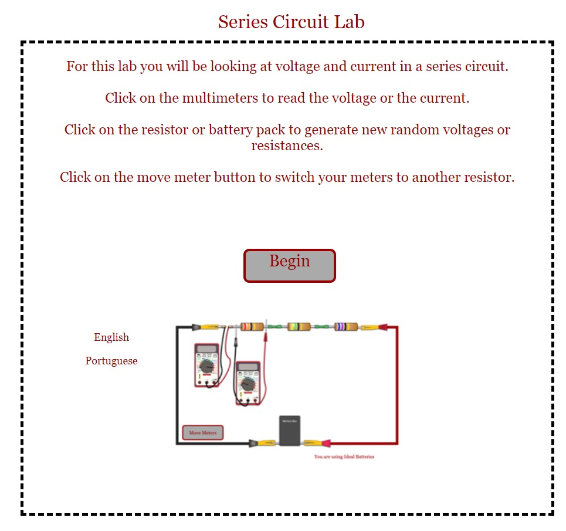

파트 A. 직렬 회로(series circuit)에서의 전류(current)
1. 다음 이미지에 표시된 "직렬 회로 실험실(Series Circuit Lab)" 시뮬레이션을 시작하세요.

2. 전류계(ammeter, 첫 번째 전류계)를 클릭하면 전류계가 연결된 회로 부분의 전류를 읽을 수 있습니다. 다음 도표에 나타나 있습니다.

3. 클릭하면 전류계가 확대되어 전류를 읽을 수 있습니다. 밀리암페어(mA) 단위로 측정됩니다. 전류를 기록할 때 밀리암페어를 1000으로 나누어 암페어(A) 단위로 변환하세요.
4. 전류계를 다시 클릭하면 전체 회로로 돌아갑니다. 전류계를 회로의 다른 위치로 이동하려면 "미터 이동(move meters)" 버튼을 클릭하세요.
5. 다음 표에 나열된 위치에 전류계를 놓고 전류계의 전류를 (mA와 A 단위로) 기록하세요.
| 전류계 위치 | 전류 (mA) | 전류 (A) |
|---|---|---|
| 첫 번째 저항기(R1) 왼쪽 | ||
| 첫 번째 저항기(R1)와 두 번째 저항기(R2) 사이 | ||
| 두 번째 저항기(R2)와 세 번째 저항기(R3) 사이 |
6. 다음 질문에 답하세요: 전류가 세 가지 다른 위치에 있을 때 무엇을 알 수 있나요?
파트 B: 병렬 회로(parallel circuit)에서의 전류
1. 다음 이미지에 표시된 "병렬 회로 실험실(Parallel Circuit Lab)" 시뮬레이션을 시작하세요.

2. 전류계(A가 표시된 원)를 클릭하여 회로의 각 가지에서 전류를 (mA와 A 단위로) 읽으세요. 전류를 읽은 후 전류계를 클릭하여 전체 회로 보기로 돌아가세요.
| 전류계 위치 | 전류 (mA) | 전류 (A) |
|---|---|---|
| 전지 옆 | ||
| 첫 번째 저항기(R1) 옆 | ||
| 두 번째 저항기(R2) 옆 | ||
| 세 번째 저항기(R3) 옆 |
3. 다음 질문에 답하세요:
a) 전지를 통과하는 총 전류는 얼마인가요?
b) 저항기들(예: R1, R2, R3)을 통과하는 모든 전류 값의 합은 얼마인가요?
c) 이 두 값에 대해 무엇을 알 수 있나요?